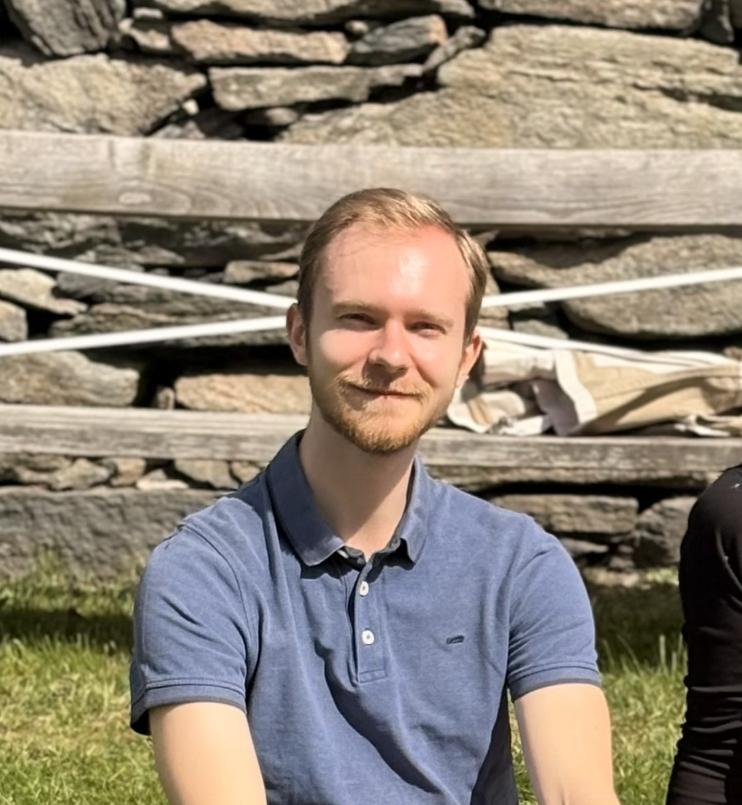

Bridging AI and biology to fight antibiotic resistance — developing machine learning frameworks for peptide discovery and conducting wet-lab validation at Chalmers University of Technology.

AMR · Peptide DiscoveryMy name is Leo, and I am a civil engineer specializing in biotechnology, currently pursuing my PhD at Chalmers University of Technology in Gothenburg, Sweden. My research centers on developing AI-assisted methods to discover novel potentiators of antibiotics. By building machine learning frameworks to guide peptide selection and directly validating these models through hands-on wet-lab experimentation, my work aims to discover novel and effective antibiotic potentiators in the fight against antimicrobial resistance.
I am dedicated to developing end-to-end computational and biological solutions that address complex global challenges. My expertise spans data analysis, machine learning optimization, and the design of innovative laboratory methodologies—always driven by a pursuit of efficiency, accuracy, and scientific creativity. Beyond the bench, I really enjoy mentoring students and contributing to a collaborative, quality-driven research culture.
Most researchers live on one side of the glass — either modelling or at the bench. My PhD is built around closing that gap: predictions become experiments, and experiments retrain the model. Each turn of the loop sharpens the search for compounds that restore the power of failing antibiotics.
Students I have had the privilege of supervising during my PhD. Watching them go on to impactful careers is one of the most rewarding parts of academic life.
Whether you're interested in collaboration, research opportunities, or just want to say hello — my inbox is open.